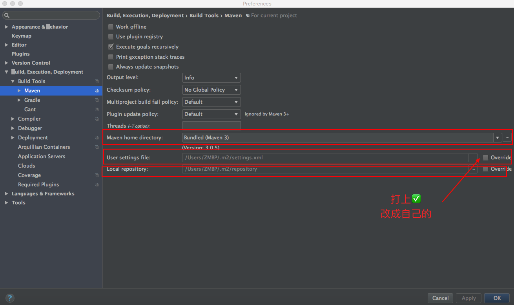
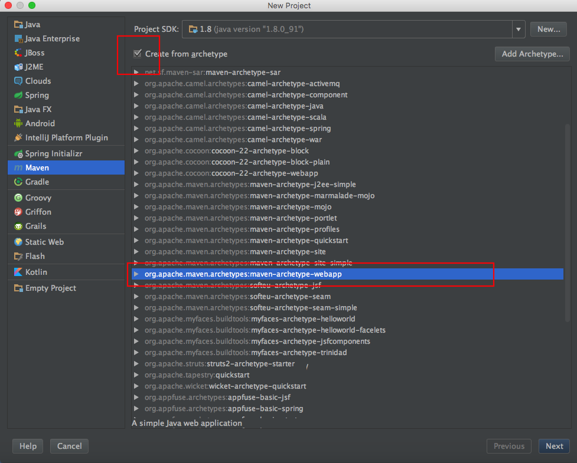
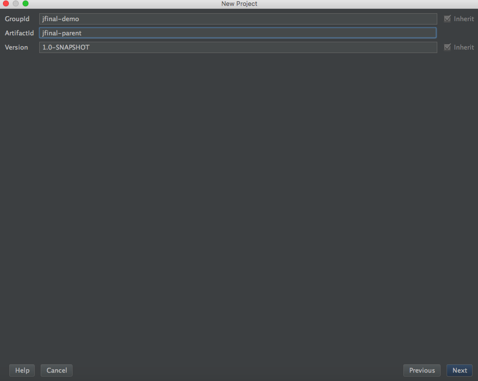
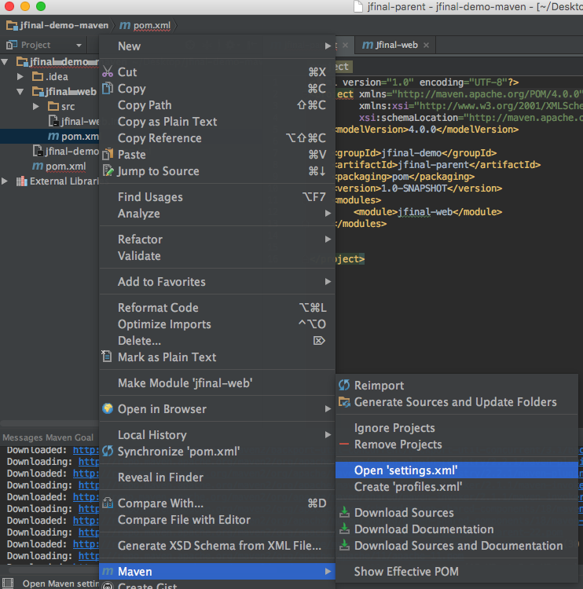

安装配置Maven插件
检查JAVA_HOME环境变量以及Java命令
echo $JAVA_HOME
java -version
本地 ~/.bash_profile
export JAVA_HOME=/Library/Java/JavaVirtualMachines/jdk1.8.0_91.jdk/Contents/Home
下载安装Maven文件修改环境变量
http://maven.apache.org/download.html
把目录放置到//Users/ZMBP/Develop/
修改Maven配置文件
config里面的settings.xml
新建一个文件夹，作为仓库
在上面配置文件中添加
<localRepository>/Users/ZMBP/Develop/apache-maven-3.3.9/repository</localRepository>
添加ali源
|
|
编辑本地环境 ~/.bash_profile
export M2_HOME=/Users/ZMBP/Develop/apache-maven-3.3.9
export M2=$M2_HOME/bin
export PATH=$M2:$PATH
重启配置服务
source .bash_profile
|
|
在plugins里启动maven的两个插件(默认启动)，并配置Maven home directory(override,点…选择maven的目录)
如果上面更改了仓库的地址，这里也要设置Build,Execution,Deployment->Build Tools->Maven
IDEA+maven
新建一个Project
- 设置Maven的位置，在创建新的maven工程的时候也得改成自己的

- 通过Maven建立Project，创建时选择使用模板

- 配置项目名和组织名,GroupId组织名一般为域名(com.mz)，ArtifactId Maven管理的包名和后面的Project name项目名称一致即可

点击next 填入project name 下面点开展开，可以看见有Module name的设置 如果有一个的话，也可以同名
添加相应的根目录和测试目录，使用Make Directory As设置src/main/java为Sources Root(源码)
（这一部分存在不用设置了）src/main/resources为ReSources Root(资源文件)，src/test/java为Test Sources Root(测试源码)，src/test/resources为Test ReSources Root(测试的资源文件)，webapp(web文件根目录)
创建项目的部分就算完成了,注意根目录下的pom.xml文件是maven的配置文件，在这里更新依赖和右键选择对应的功能

使用maven的方式启动项目,修改web.xml，index.jsp为默认的欢迎页
在pom.xml配置服务器容器(如Jetty和Tomcat),在pom.xml->build->plugins下添加jetty和tomcat的 maven plugin，点击右上角的提示import,maven会自动下载jetty和tomcat的容器插件，打开右侧的Maven Projects，展开Plugins会看到jetty和tomcat，你也可以使用前一篇blog中普通java web配置Tomcat的方式来运行项目，
注意在Jfinal中 main不能启动容器，只有jetty才行 在web.xml中Config的路径不要配置错误打包的时候直接可以build 选择 Artifacts就可以在target中找到对应的包了第一次运行的时候有可能会失败，要下载一些东西，多试几次
搜索其他jar
如果我们要使用其他的jar，在http://search.maven.org/中央库里搜索相关的包，如：使用jfinal,搜索并选择相应的版本
添加本地jar包依赖
如果项目中使用了maven来管理依赖，但是同时需要添加本地的jar包（比如说有些jar包在maven的中央仓库中找不到）
这时不能直接在项目工程（Ctrl + Shift + Alt + S）的module中添加磁盘上的jar包，否则会报错
本地的jar包用maven install命令添加到maven的本地仓库里再在pom.xml文件中添加dependency即可。
参考文章
IDEA+maven快速上手JFinal（全步骤图文解析）
https://my.oschina.net/mzdbxqh/blog/718748
使用IntelliJ IDEA 配置Maven（入门）
http://blog.csdn.net/qq_32588349/article/details/51461182